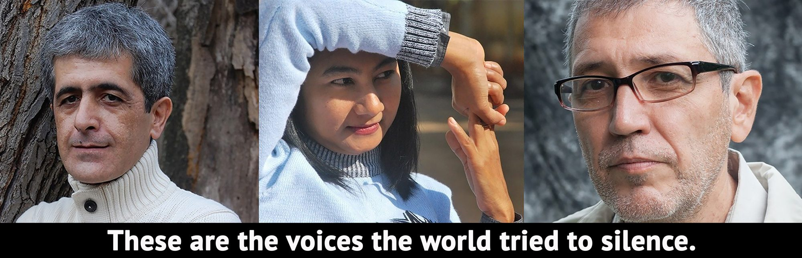
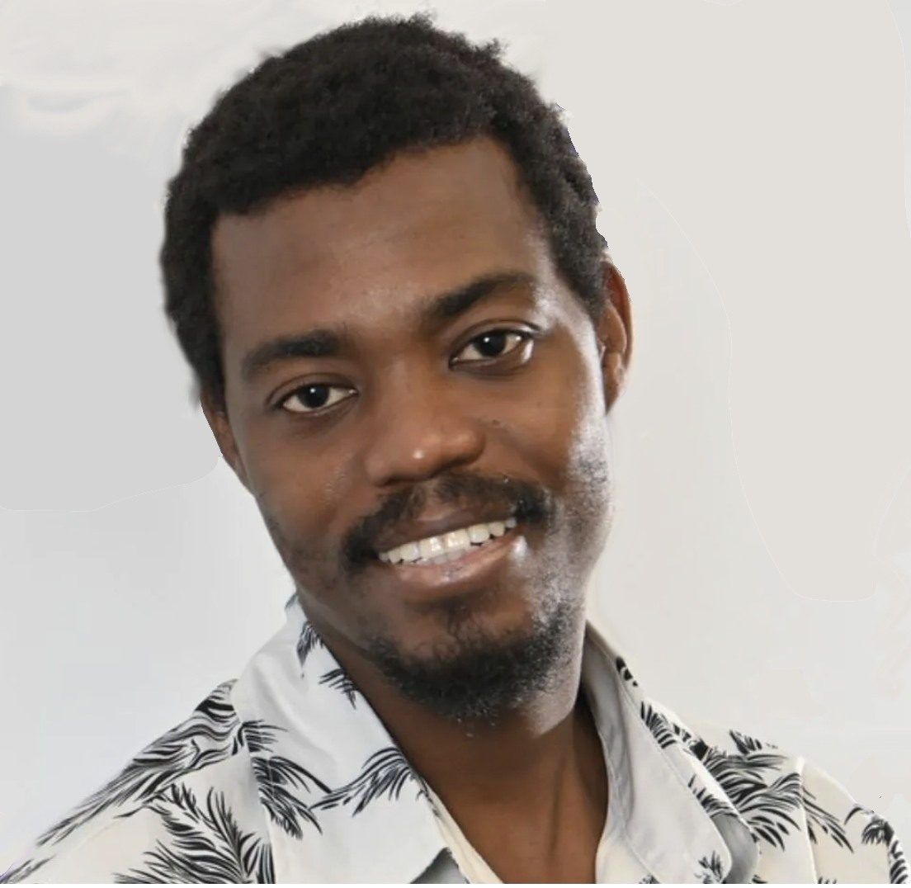
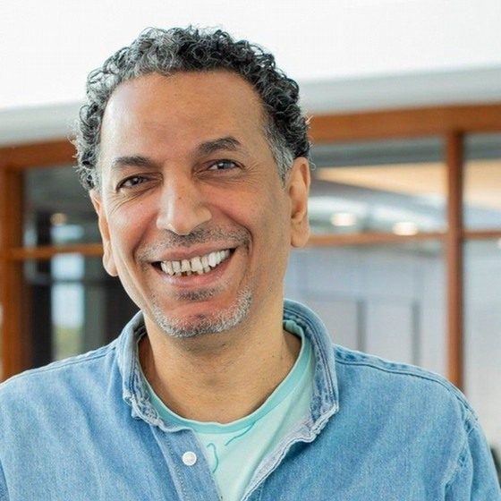
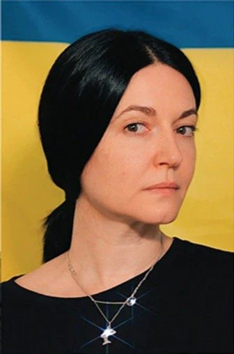
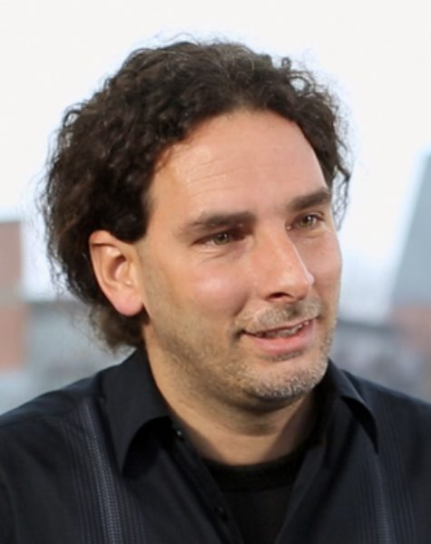
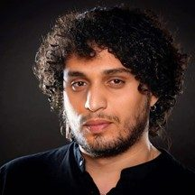

But at City of Asylum, those voices are heard.
The Exiled Writer Residency ProgramBut at City of Asylum, those voices
are heard.
Our residency program provides
“I admire what [City of Asylum] has done to accommodate the writers to an extraordinary degree after their residency is up.”
— Russell Banks
Author, President International Parliament of Writers
Ukrainian Writers Fellowship
In response to the 2022 invasion of Ukraine, City of Asylum launched a fellowship enabling three Ukrainian writers to come to Pittsburgh, so they can continue to research, write, and publish despite the ongoing war.
22 Writers. 19 Countries. One Safe Haven.
Read the writers’ stories—what they fled, what they created,
and how City of Asylum changed their lives.
Currently in Residence
Writers we are protecting right now.
Anonymous
An acclaimed investigative journalist and author who has spent two decades covering narco- and human trafficking on the Mexico-U.S. border and its impact on marginalized communities.

Haiti CurrentBertony Louis
A poet, educator, and lawyer whose humanitarian work bridges cultures, languages, and continents. Winner of 13 international poetry awards. In exile due to the threats of a failed state.

Egypt CurrentMukhtar Shehata
A novelist, ethnographer, and documentary filmmaker whose work explores social change, class, gender, and rural transformation in Egypt after the 2011 revolution and Arab identity.

Ukraine CurrentOlena Boryshpolets
Poet, writer, journalist, actress, and cultural organizer. Known for her vivid voice and interdisciplinary artistic work, which evokes the spirit and cultural memory of Odesa.
 Ukraine
Current
Ukraine
Current
Oleksandr Frazé-Frazénko
A filmmaker, poet, musician, and translator, he is co-founder of OFF Laboratory, which publishes and translates voices silenced by war, exile, and censorship.
 Sudan
Current
Sudan
Current
Rania Mamoun
Her journalism, fiction, poetry, and activism confront issues of censorship, social justice, and women’s rights. She was a leader in the Women’s Parliament and the Sudanese resistance committee.
Alumni
Writers who have completed their residency. Tap any card to read their story.
 Ethiopia
Former
Ethiopia
Former
Bewketu Seyoum
A novelist, poet, comedian who satirized political corruption and social injustice, he is one of the leading writers of his generation. He was honored as Ethiopian Best Novelist of the Year and Best Young Author.
 Ukraine
Former
Ukraine
Former
Volodymyr Rafeyenko
An award-winning novelist, poet, translator, and literary critic, he wrote and published entirely in Russian until the Russian invasion of Donetsk. He now writes only in Ukrainian.
 Cuba
Former
Cuba
Former
Jorge Olivera Castillo
Poet, journalist, and dissident, his writing led to his arrest during Cuba’s “Black Spring” crackdown. He spent 21 months in Guantanamo Prison, including 9 months in solitary, and was re-arrested repeatedly.
 Bangladesh
Former
Bangladesh
Former
Tuhin Das
A poet and essayist whose secular writings made him a target of Al Qaeda-linked militants murdering writers in Bangladesh. Forced into hiding, he lived underground and wrote clandestinely.
 Syria
Former
Syria
Former
Osama Alomar
One of the Arab world’s most celebrated practitioners of the “very short story” — parable-like fictions that skewer authoritarianism with dark humor. Forced to flee by the Assad regime.
 Burma
Former
Burma
Former
Khet Mar
A revered Burmese journalist and writer with 31,000 Facebook followers, she was sentenced to ten years imprisonment and freed from death-row during an amnesty. People made pilgrimages to visit her on Sampsonia Way from all over the U.S.
 China
Former
China
Former
Huang Xiang
Known as the Walt Whitman of China, he was imprisoned for 12 years and tortured, and all his publications were destroyed or repressed by the government. He created City of Asylum's iconic “House Poem” and helped us re-imagine our mission.
 El Salvador
Former
El Salvador
Former
Horacio Castellanos Moya
His novel Revulsion, a furious satire of his native El Salvador, resulted in death threats. During his residency at City of Asylum he won the Premio Iberoamericano de Narrativa Manuel Rojas award for lifetime achievement in literature, one of the most prestigious awards for Spanish language authors.
 Venezuela
Former
Venezuela
Former
Israel Centeno
One of Venezuela's most celebrated novelists and winner of the Federico García Lorca Award in Spain. He was forced into exile after his novel The Conspiracy drew threats and attacks from the Chávez regime.
 Republic of Congo
Former
Republic of Congo
Former
Aunel Arneth
A pro-democracy activist, journalist, and documentary filmmaker, his work exposed state crimes and government corruption. His documentary Keep Quiet or Die led to arrest warrants.
 Vietnam
Former
Vietnam
Former
Mai Khoi
A singer and composer—winner of international awards for art and activism—known as the “Lady Gaga of Vietnam,” she ran for the National Assembly on a pro-democracy platform. Police raids and evictions forced her into exile.

Cuba FormerOrlando Pardo Lazo
Novelist, photographer, and dissident blogger, his novel Boring Home was censored by the Cuban government in 2009. Subsequently, he was arrested three times and under constant watch by Castro's secret police.
Sabreen Kadhim
Poet and television journalist whose work bore witness to violence during the rise of militias in Baghdad. Winner of the 3rd UNESCO Poetry Contest and the Iraqi Youth Poetry Festival.
 Turkey
Former
Turkey
Former
Simten Cosar
A feminist political scientist and scholarly editor, she was persecuted for signing the “We Will Not Be a Party to this Crime” declaration that opposed military violence against Kurds. After her residency, she co-founded Feminist Asylum: A Journal of Critical Interventions.
 Iran
Former
Iran
Former
Yaghoub Yadali
An experienced TV director, his debut novel Rituals of Restlessness won Iran's most prestigious literary award. But subsequently—even though it had passed state censorship—it led to his imprisonment for a scene implying an adulterous affair.

Algeria FormerAnouar Rahmani
Novelist, journalist, and the first public advocate for legalization of same-sex marriage in Algeria, he was shortlisted for the Index on Censorship’s Freedom of Expression Awards.
Making a home, and part of a community
City of Asylum writers are available for talks and readings at schools and community groups throughout Pittsburgh — and beyond — in partnerships with universities, arts institutions, and literary festivals.